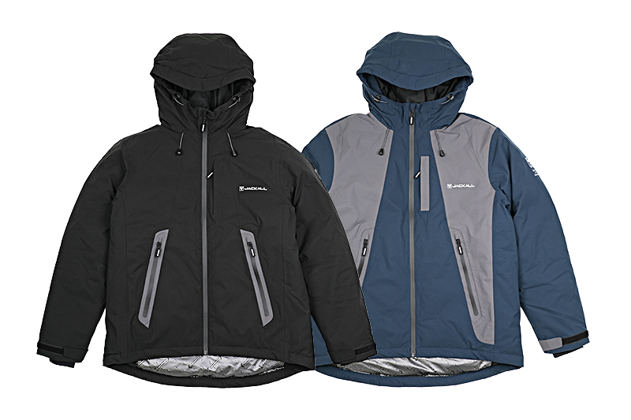
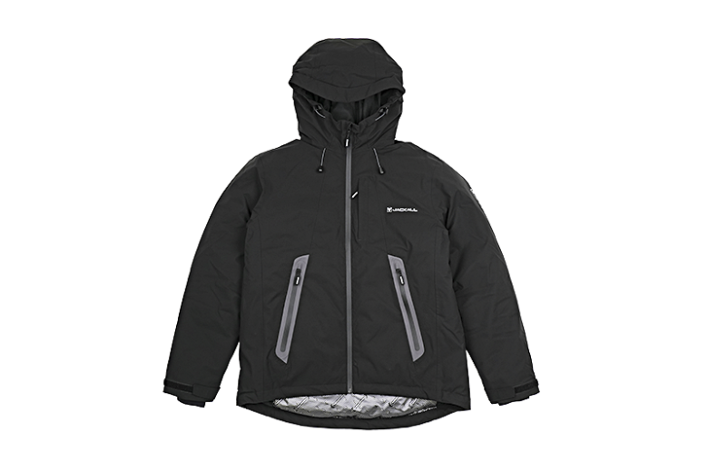
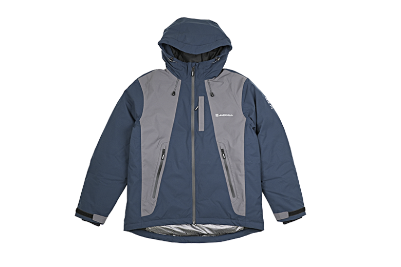

サーモフォース エクストリームジャケット
（THERMO FORCE XTREME JACKET）
サーモフォース エクストリームジャケット（JA-C002）は、ジャッカルの防寒ウェア「サーモフォース」シリーズの最上位モデルです。
最大クラスの中綿量で上半身を包み込む、シリーズ最高峰の保温性能が最大の特徴。冷たい風にさらされる真冬のボートフィッシングや、長時間の釣行でも、寒さではなく魚に意識を向け続けられる極寒対応のフラッグシップです。

画像出典:JACKALL公式HP
スペック
- メーカー
- JACKALL（ジャッカル）
- 品番
- JA-C002
- サイズ
- S／M／L／XL／XXL
- 素材
- 表：ポリエステル100％／裏：ポリエステル100％
中わた：ポリエステル90％・アクリレート10％ - シルエット
- レギュラー
- カラー
- ブラック／ネイビー×グレー
- 価格
- 31,350円（税込）
▼今すぐチェック
サーモフォース エクストリームジャケットの特徴
極寒のフィールドに、最大クラスの暖かさを
-
シリーズ最高峰の保温性能
最大クラスの中綿量で、体の中心になる上半身を厚く包み込む。サーモフォースシリーズの中でも、暖かさを最優先したモデル。
-
暖かさを守る防風・撥水設計
表地は撥水性のある生地で、縫い目はシームテープ加工で水の侵入を防ぐ。止水タイプのファスナー（スライダーカバー付き）で、雨や雪、冷たい風が入りにくい。
-
冬の釣りに合わせたディテール
袖は二重袖で、内袖はクロロプレン素材で水の侵入を防ぎ、外袖は袖口のアジャスト範囲を2025モデルより広げている。フード内側はフリースでアジャスター付き。グローブをしたままでも開け閉めしやすいリフレクター付きの引手や、リフレクションプリントも付いている。
サーモフォース エクストリームジャケットの使い方
冬の釣りでは、吸湿性のあるインナーとフリースなどの中間着の上に、いちばん外側の防寒着として着るのが基本です。
船の上や風の強い堤防では、フードをかぶってアジャスターで締め、袖口のアジャスターも締めると冷気が入りにくくなります。中わたは化繊綿なので、シーズン中の汚れは自宅で洗濯できます。
サーモフォース エクストリームジャケットがおすすめの人
真冬のボートフィッシングや、夜の堤防・磯など、風に長時間さらされる釣りで寒さに悩んでいる人におすすめです。
冬のタチウオやメバル、オフショアのジギングなど、じっと待つ時間が長い釣りほど保温性の差が出ます。動きやすさより暖かさを最優先したい人向けのモデルです。寒さで集中が切れずに粘れるので、冬の短い時合いで釣れるチャンスも逃しにくくなります。
ワンポイント
中わたは化繊綿なので、シーズン中も自宅で洗濯して清潔に保てるのがうれしいポイントです。サイズは中に重ね着する前提で選びましょう。
サーモフォースシリーズのジャケットの違い
| モデル | 特徴 | 価格（税込） |
|---|---|---|
| エクストリームジャケット（JA-C002） | 最大クラスの中綿量。暖かさを最優先した極寒対応のフラッグシップ（本記事のモデル） | 31,350円 |
| アクティブジャケット（JA-C001） | 動きやすさと保温性を両立した万能モデル | — |
| ジャケットEX（JA-A002） | 「熱の防具」サーモフォースの進化モデル。3色展開 | 29,700円 |
とにかく暖かさを優先するならエクストリーム、動きやすさも欲しいならアクティブがおすすめ。サーモフォースシリーズには、パンツやビブ、ネックウォーマーもあり、上下でそろえるとより暖かく過ごせる。
カラー
サーモフォース エクストリームジャケットのカラーを紹介します。

ブラックどんなウェアとも合わせやすい定番カラー。

ネイビー×グレーネイビーとグレーの切り替えが目を引くカラー。
画像出典:JACKALL公式HP
▼今すぐチェック
サーモフォース エクストリームジャケットとあわせてチェックしたいアイテム
-
 タイタニュームフィットグローブ
アイマ
詳細はこちら＞
タイタニュームフィットグローブ
アイマ
詳細はこちら＞
冬の釣りの防寒グローブ。手先の冷えも防ぎたい時に。
-
 フローティングベスト X-0III
アイマ
詳細はこちら＞
フローティングベスト X-0III
アイマ
詳細はこちら＞
冬の防寒着の上からも着やすいフローティングベスト。
-
 ブルーストーム Reカリフウエスト
ブルーストーム
詳細はこちら＞
ブルーストーム Reカリフウエスト
ブルーストーム
詳細はこちら＞
船の上でもじゃまになりにくい腰巻きタイプのライフジャケット。